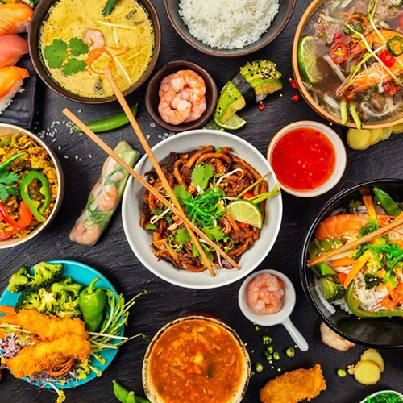

MISSÃO
Levar até você a riqueza da culinária oriental, proporcionando receitas autênticas e inspiradoras que capturam a essência dos pratos tradicionais dos países asiáticos.

Nossas receitas mais tradicionais da culinária oriental
Some representative placeholder content for the first slide.

Some representative placeholder content for the second slide.
Some representative placeholder content for the third slide.
ESPECIAL
Conheça o nosso guia de preparos para uma autêntica experiência gastronômica e cultural
Aqui, você encontrará uma seleção de receitas inspiradas em diferentes culturas asiáticas, todas cuidadosamente elaboradas para proporcionar uma jornada única de sabores e tradições culinárias. De pratos clássicos à criações contemporâneas, as receitas são acompanhadas por uma história que revela a riqueza cultural por trás de cada iguaria. Descubra os segredos culinários das mais diversas culturas orientais e compartilhe conosco essa experiência que celebra a diversidade e a magia da gastronomia que une as pessoas em torno da mesa.
Você está convidado a explorar a nossa cozinha e embarcar em uma jornada inesquecível para o paladar e para a alma!
Inscreva-se na nossa newsletter semanal e receba conteúdo exclusivo direto no seu e-mail
Por favor, informe um endereço de e-mail válido.
Bem-vindo ao nosso mundo encantado de sabores e tradições orientais
Levar até você a riqueza da culinária oriental, proporcionando receitas autênticas e inspiradoras que capturam a essência dos pratos tradicionais dos países asiáticos.
Ao longo dos anos, mergulhamos profundamente na cultura alimentar de países como China, Japão Coreia, Tailândia, Vietnã e outros, aprendendo com chefs locais, famílias e cozinheiros de rua.
Oferecer conteúdo de alta qualidade, precisão e autenticidade em todas as nossas receitas. Cada prato é cuidadosamente selecionado e testado para garantir que você possa recriar as experiências gastronômicas mais autênticas em sua própria cozinha.